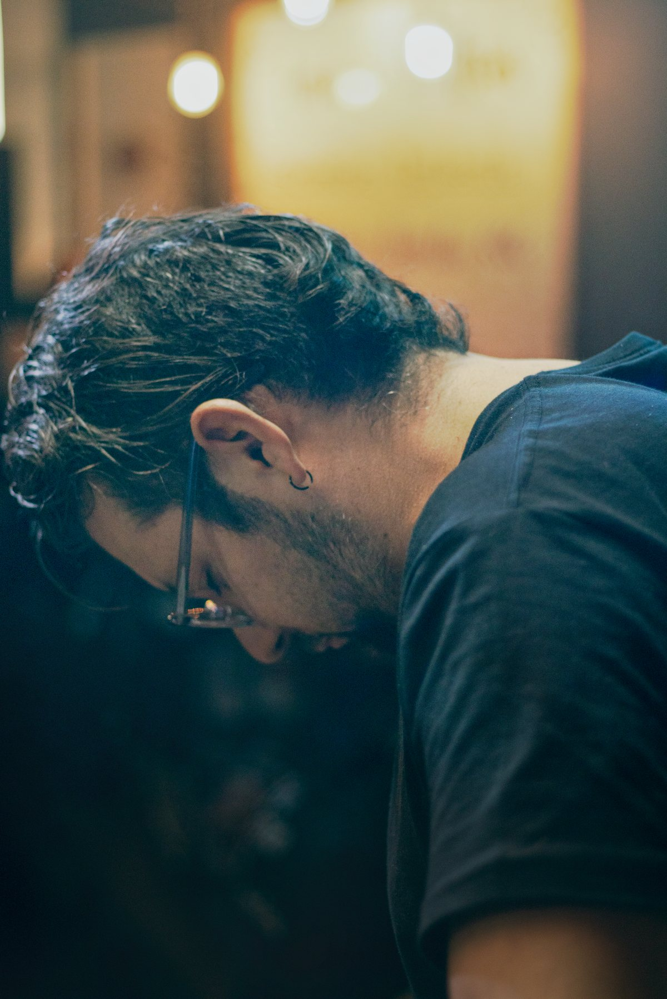
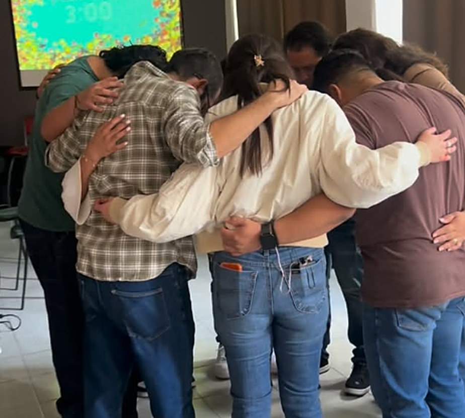

Iglesia Cristiana · Naucalpan de Juárez
Es tiempo de gracia.
Una comunidad de fe en Naucalpan, Estado de México. Ven como estás y acompáñanos cada domingo.
Próximo culto: domingo, 11:00 hrs
Culto dominical
Cuándo nos reunimos
Nos reunimos todos los domingos. Puedes llegar en cualquier momento del culto.
Priv. de los Cipreses 2, 1.º piso, Jardines de San Mateo, Naucalpan de Juárez.
Quiénes somos
Una comunidad de fe
La Iglesia Cristiana Tiempo de Gracia es una comunidad de fe ubicada en Naucalpan de Juárez, Estado de México.
Nuestros pastores
Pablo Guerrero
Laura Guerrero
Nos reunimos para adorar a Dios, aprender de su Palabra y crecer juntos como familia. Si es la primera vez que visitas una iglesia, eres bienvenido tal como eres.


Ubicación
Cómo llegar
Estamos en Jardines de San Mateo, en Naucalpan de Juárez.
Priv. de los Cipreses 2, 1.º pisoJardines de San Mateo, 53240 Naucalpan de Juárez, Estado de México
- Culto
- Domingos de 11:00 a 14:00 hrs
- Pastores
- Pablo y Laura Guerrero